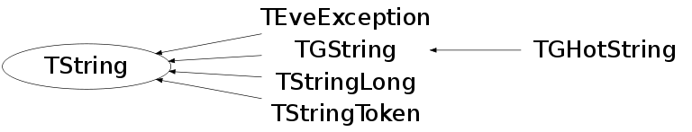

class TString
In what follows, fCap is the length of the underlying representation vector. Hence, the capacity for a null terminated string held in this vector is fCap-1. The variable fSize is the length of the held string, excluding the terminating null. The algorithms make no assumptions about whether internal strings hold embedded nulls. However, they do assume that any string passed in as an argument that does not have a length count is null terminated and therefore has no embedded nulls. The internal string is always null terminated.
This class is also known as (typedefs to this class)
vector<TString,allocator<TString> >::value_typeFunction Members (Methods)
public:
protected:
| TString(const char* a1, Ssiz_t n1, const char* a2, Ssiz_t n2) | |
| static Ssiz_t | AdjustCapacity(Ssiz_t oldCap, Ssiz_t newCap) |
| static Ssiz_t | Align(Ssiz_t s) |
| void | AssertElement(Ssiz_t nc) const |
| void | Clobber(Ssiz_t nc) |
| void | InitChar(char c) |
| static Ssiz_t | Recommend(Ssiz_t s) |
private:
| void | Clone(Ssiz_t nc) |
| void | FormImp(const char* fmt, va_list ap) |
| Ssiz_t | GetLongCap() const |
| char* | GetLongPointer() |
| const char* | GetLongPointer() const |
| Ssiz_t | GetLongSize() const |
| char* | GetPointer() |
| const char* | GetPointer() const |
| char* | GetShortPointer() |
| const char* | GetShortPointer() const |
| Ssiz_t | GetShortSize() const |
| UInt_t | HashCase() const |
| UInt_t | HashFoldCase() const |
| char* | Init(Ssiz_t capacity, Ssiz_t nchar) |
| Bool_t | IsLong() const |
| static Ssiz_t | MaxSize() |
| void | SetLongCap(Ssiz_t s) |
| void | SetLongPointer(char* p) |
| void | SetLongSize(Ssiz_t s) |
| void | SetShortSize(Ssiz_t s) |
| void | SetSize(Ssiz_t s) |
| void | UnLink() const |
| void | Zero() |
Class Charts
{kind=link}
{kind=link}
{kind=link}
{kind=link}

Function documentation
TString(const char* s, Ssiz_t n)
Create TString and initialize it with the first n characters of cs.
TString(const char* a1, Ssiz_t n1, const char* a2, Ssiz_t n2)
Special constructor to initialize with the concatenation of a1 and a2.
char * Init(Ssiz_t capacity, Ssiz_t nchar)
Private member function returning an empty string representation of size capacity and containing nchar characters.
Ssiz_t Capacity(Ssiz_t n)
Return string capacity. If nc != current capacity Clone() the string in a string with the desired capacity.
UInt_t Hash(const void* txt, Int_t ntxt)
Calculates hash index from any char string. (static function) Based on precalculated table of 256 specially selected numbers. These numbers are selected in such a way, that for string length == 4 (integer number) the hash is unambigous, i.e. from hash value we can recalculate input (no degeneration). The quality of hash method is good enough, that "random" numbers made as R = Hash(1), Hash(2), ...Hash(N) tested by <R>, <R*R>, <Ri*Ri+1> gives the same result as for libc rand(). For string: i = TString::Hash(string,nstring); For int: i = TString::Hash(&intword,sizeof(int)); For pointer: i = TString::Hash(&pointer,sizeof(void*)); V.Perev
Ssiz_t Index(const char* pat, Ssiz_t patlen, Ssiz_t i, TString::ECaseCompare cmp) const
Search for a string in the TString. Plen is the length of pattern, startIndex is the index from which to start and cmp selects the type of case-comparison.
TString & Replace(Ssiz_t pos, Ssiz_t n, const char* s, Ssiz_t ns)
Remove at most n1 characters from self beginning at pos, and replace them with the first n2 characters of cs.
TString& ReplaceAll(const char* s1, Ssiz_t ls1, const char* s2, Ssiz_t ls2)
Find & Replace ls1 symbols of s1 with ls2 symbols of s2 if any.
TSubString Strip(TString::EStripType s = kTrailing, char c = ' ') const
Return a substring of self stripped at beginning and/or end.
Ssiz_t AdjustCapacity(Ssiz_t oldCap, Ssiz_t newCap)
Calculate a nice capacity greater than or equal to newCap.
void Clone(Ssiz_t nc)
Make self a distinct copy with capacity of at least tot, where tot cannot be smaller than the current length. Preserve previous contents.
TString * ReadString(TBuffer& b, const TClass* clReq)
Read TString object from buffer. Simplified version of TBuffer::ReadObject (does not keep track of multiple references to same string). We need to have it here because TBuffer::ReadObject can only handle descendant of TObject.
void WriteString(TBuffer& b, const TString* a)
Write TString object to buffer. Simplified version of TBuffer::WriteObject (does not keep track of multiple references to the same string). We need to have it here because TBuffer::ReadObject can only handle descendant of TObject
Ssiz_t InitialCapacity(Ssiz_t ic = 15)
Set default initial capacity for all TStrings. Default is 15.
Ssiz_t ResizeIncrement(Ssiz_t ri = 16)
Set default resize increment for all TStrings. Default is 16.
Ssiz_t MaxWaste(Ssiz_t mw = 15)
Set maximum space that may be wasted in a string before doing a resize. Default is 15.
TSubString operator()(Ssiz_t start, Ssiz_t len) const
Return sub-string of string starting at start with length len.
TSubString SubString(const char* pat, Ssiz_t start = 0, TString::ECaseCompare cmp = kExact) const
Bool_t IsFloat() const
Returns kTRUE if string contains a floating point or integer number. Examples of valid formats are: 64320 64 320 6 4 3 2 0 6.4320 6,4320 6.43e20 6.43E20 6,43e20 6.43e-20 6.43E-20 6,43e-20, -6.43e+20
Double_t Atof() const
Return floating-point value contained in string.
Examples of valid strings are:
64320
64 320
6 4 3 2 0
6.4320 6,4320
6.43e20 6.43E20 6,43e20
6.43e-20 6.43E-20 6,43e-20
Bool_t EndsWith(const char* pat, TString::ECaseCompare cmp = kExact) const
Return true if string ends with the specified string.
TObjArray * Tokenize(const TString& delim) const
This function is used to isolate sequential tokens in a TString. These tokens are separated in the string by at least one of the characters in delim. The returned array contains the tokens as TObjString's. The returned array is the owner of the objects, and must be deleted by the user.
void FormImp(const char* fmt, va_list ap)
Formats a string using a printf style format descriptor. Existing string contents will be overwritten.
void Form(const char *va_(fmt), ...)
Formats a string using a printf style format descriptor. Existing string contents will be overwritten.
TString & operator+=(Double_t f)
TString & operator+=(Long64_t l)
TString & operator+=(ULong64_t ul)
Bool_t BeginsWith(const char* s, TString::ECaseCompare cmp = kExact) const
Bool_t BeginsWith(const TString& pat, TString::ECaseCompare cmp = kExact) const
Ssiz_t Index(const char* s, Ssiz_t i = 0, TString::ECaseCompare cmp = kExact) const
{ return Index(s, s ? strlen(s) : 0, i, cmp); }TString & Replace(Ssiz_t pos, Ssiz_t n, const char* cs)
{ return Replace(pos, n, cs, cs ? strlen(cs) : 0); }TString & ReplaceAll(const TString& s1, const TString& s2)
{ return ReplaceAll(s1.Data(), s1.Length(), s2.Data(), s2.Length()) ; }TString & ReplaceAll(const TString& s1, const char* s2)
{ return ReplaceAll(s1.Data(), s1.Length(), s2, s2 ? strlen(s2) : 0); }TString & ReplaceAll(const char* s1, const TString& s2)
{ return ReplaceAll(s1, s1 ? strlen(s1) : 0, s2.Data(), s2.Length()); }TString & ReplaceAll(const char* s1, const char* s2)
{ return ReplaceAll(s1, s1 ? strlen(s1) : 0, s2, s2 ? strlen(s2) : 0); }char & operator()(Ssiz_t i)
char operator()(Ssiz_t i) const
const char * Data() const
void Zero()
TString * ReadString(TBuffer& b, const TClass* clReq)
void Puts(FILE* fp)
char & operator()(Ssiz_t i)
char operator()(Ssiz_t i) const
istream & ReadToDelim(istream& str, char delim = '\n')